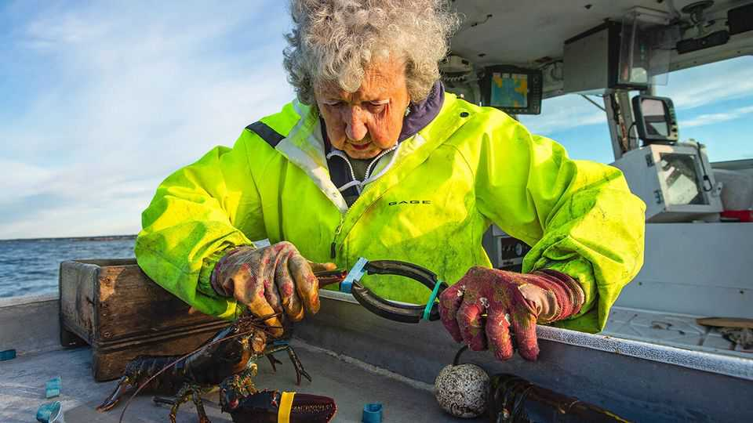

Obituary
Virginia Oliver worked Maine’s waters for nearly a century
The lobster-boat skipper died on January 21st, aged 105
February 12th 2026

THE KNOCKING of a diesel engine coming to life, followed by steady, low chugging and a roar that grows quieter in the distance: that is the sound of early mornings in coastal Maine. Lobster boats in the common Cape Islander style are made for work, broad and flat-bottomed, sturdy and high-bowed, with plenty of space for storage and room on deck to stack traps, built for working in choppy northern waters. They ply near-shore grounds rather than the high seas, their captains checking the traps they set a day or two earlier before returning to the same dock in mid-afternoon from which they set out before sunrise.
Virginia Oliver first went out on the water with her father, who sold lobsters and had a general store in the Muscle Ridge Islands, when she was eight years old—when traps were rickety crates of wooden slats that needed heavy ballast to sink them and strong arms or a sturdy winch to raise them, not like today’s wire-mesh traps that sink easily and get pulled up by mechanical haulers. This was before the Great Depression and the second world war, and not too long after those sea cockroaches were considered fit only for prisoners, servants and farm animals.
Female lobstermen are rare today, as the profession’s common name suggests, but they were unheard of when Ginny was growing up. Back then women could knit nets for the wooden traps their husbands made, but their place was on shore. As much as she enjoyed being on the water with her father, Ginny went to school, living on the mainland with her aunts and grandfather in Rockland during the week. She married and had four children, and when the youngest was nine she went back to paid work.
She spent 19 years at a printing press in Rockland, lugging heavy equipment around, but got tired of it. “Lobstering”, she told an interviewer when she was 101, “I wouldn’t have to work half as hard, and I could be my own boss.” So one day, when her husband came home, she told him: “I just quit. I’m going with you.”
It’s not hard to see why. The intricate waterways wending among tiny, pine-forested islands in the Penobscot Bay traverse a rugged, dramatic, intimate seascape for which tourists empty their pockets every summer to see for a fleeting week or two what she got to see every day: rocky outcroppings where seals hoot at passing boats, the sun rising over Vinalhaven in a riot of reds and golds and setting behind the mainland as the sky goes from periwinkle to cornflower blue to an endless canopy of stars.
From the time she left the printing press she reminded her husband Bill, her fishing partner for 60 years, and then her son, who took Bill’s place after he died, that she was indeed her own boss—and theirs too. She cut an unusual figure on the water, always going out in earrings and lipstick (“You never know who you are going to see,” she explained).
Lobstering can be tough. As Colin Woodard, a journalist from Maine, explained in “The Lobster Coast”, his book-length study of coastal Maine’s lobstering towns, “Through custom, peer pressure and the occasional extralegal act, the lobstermen of each harbour have long conserved their lobstering turf; they determine who fishes it.” If a skipper sets traps in waters that everyone knows belong to lobstermen from another harbour, she might find her traps emptied or buoys missing. If things get really bad, tyres can get slashed, or guns drawn.
But she was tough, too. Nobody ever gave her grief for being a woman running a boat (“I’d have told them off if they did”). One lobsterman who knew her recalled, “She had a mouth like a sailor. A lot of things she said you couldn’t print in a newspaper.”
Three days a week, Ginny would wake up at 2.45am for the 15-minute drive south to Spruce Head, where she and her son Max kept their boat, the Virginia, named by her late husband. They would row their little skiff from the shore to where their boat was moored for the night. After sating Virginia’s appetite for diesel and hauling her bait on board—usually a box of reeking menhaden, which bottom-feeding lobsters love—she and Max would leave the harbour at daybreak.
She had 200 traps; Max had another 200. Regulations forbid hauling any traps until 30 minutes before sunrise, but then came a full day of work. “If we haul 200 traps,” she explained, “that’s a good trip.” Max did the trap-hauling, and Ginny would measure and inspect the lobsters. By law, juveniles and “berried” lobsters (egg-bearing females, named because eggs cling to their carapace like berries) must be thrown back into the water, and eggers notched with a V in their tails, to let any other lobstermen who caught them know they were productive, and should not be kept. Then she would bind their claws with thick rubber bands to make them easier to handle. She skippered her own boat until a fall when she was 103 confined her to the mainland, 95 years after she first put to sea with her father.
She did this in relative obscurity until a local filmmaker persuaded her to appear in a documentary called “Conversations with the Lobster Lady” when she was 99. Viewers learned that she went to the supermarket daily, just to get out of the house and see people, and that her children, then aged 74, 76, 78 and 81, still came for supper every Saturday night.
Soon enough, television networks and feature writers found her. A local poet and author wrote a children’s book about her life. The only thing that seemed to discomfit her were threats to her independence: after a doctor asked why she was still lobstering in her late 90s, she responded “Well, that’s 'cause I wanted to go.” She confided to an interviewer, “He really made me mad.” She liked keeping busy, and, modest Mainer to her bones, took the attention in her stride. “There’s always something to do,” she would say, in her musical Downeast accent. “I don’t think I’m anything too special.” Others disagreed. ■